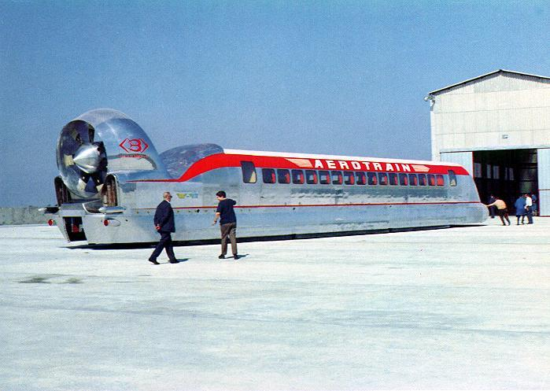

Par Margot BAUDRY, Thomas DRENEAU, Nolan CUENCA, Alexian BALLÉ-FILEP et Louis MAFART
Le 26 juin 1962, le brevet de l’Aérotrain est déposé. Pour son créateur, Jean Bertin, il s’agit de l’acte de naissance de cet objet technique. L’Aérotrain est alors une innovation révolutionnaire pour l’époque. D’ailleurs, des technologies similaires, comme le Maglev en Asie (qui suppriment le frottement avec le sol), peinent encore aujourd’hui à se démocratiser.Les objets techniques sont généralement le fruit du travail de nombreux ingénieurs. Leur mission consiste souvent à analyser les besoins d’une société et à y répondre par des solutions adaptées. C’est une définition rationnelle, presque fonctionnelle du rôle de l’ingénieur mais elle ne couvre pas toutes ses dimensions.Au-delà de cette "responsabilité" de proposer des solutions techniques, les ingénieurs peuvent aussi se servir des objets techniques comme moyen d’expression. Dans cette optique, l’objet ne répond pas seulement à un besoin : il incarne une vision, un contexte, voire un imaginaire désiré. Il devient porteur d’un projet de société.Mais emprunter cette voie, comme ce fut le cas pour l’Aérotrain, peut se révéler risqué. Ce projet est resté à l’état de prototype. Un échec, certes, mais un échec qui ne s’explique pas uniquement par des choix techniques ou économiques. Car l’Aérotrain ne servait pas d’abord les usagers, mais un idéal : celui d’une société de la performance, du toujours-plus-vite, plutôt que ceux qui allaient l’utiliser.
Dans quelle mesure l’Aérotrain peut-il être considéré non seulement comme un objet technique, mais avant tout comme le produit d’un imaginaire ?
Cette carte représente le milieu technique de l’Aérotrain, à savoir : le turboréacteur, les coussins d’air, le monorail, les territoires traversés. On parle d'une association dont on pourrait dire qu’elle est ou non un modèle technique et territorial de référence, qui innove, mais qui est finalement isolé, dépendant à la fois de technologies spécifiques et du kérosène. Ce montage technique a généré non seulement des attachements, mais également des controverses sur le bruit, le paysage et les choix géopolitiques en défaveur du TGV. L’Aérotrain et son projet font alors écho à des logiques techniques, sociales et géopolitiques entrecroisées. Ces cartographies, ces schémas permettent de comparer le l'AéroTrain au TGV d'un point de vu technique.
Cette frise chronologique retrace l'histoire de l'aérotrain de sa conception dans les années 50 à son arrêt totale en 1977 en passant par toutes ses étapes de développement. Au début, le projet était vu comme un projet d'avenir, c'était le transport du futur. Il a rapidement suscité l'intérêt en France puis dans pays du monde entier
Centre du schéma :
Parties prenantes principales :
Structure du schéma :
Cette carte représente les différentes origines des matériaux nécessaires à la fabrication d’un modèle d’Aérotrain. Ces ressources sont dispersées à l’échelle internationale, couvrant presque tous les continents. L’Aérotrain est un objet complexe, et cela se manifeste par la nécessité d’aller chercher ses composants loin, dans de nombreux endroits du monde.
L’Aérotrain, au-delà d’être un objet technique complexe, est aussi le fruit d’un imaginaire. Son existence repose non pas sur une avancée de la technique, mais sur un désir de pouvoir aller toujours plus vite et d’aller chercher loin la performance. De fait, il circule sur des lignes adaptées uniquement pour l’Aérotrain. À force de chercher la performance, on finit donc par la réduire, par manque de pragmatisme et à cause de l’illusion d’un objet qui fait rêver. Au-delà de ça, l’aspect futuriste du train et de sa technique contribue à nourrir cet imaginaire.
Cette carte représente les zones d’influence de deux objets techniques : le TGV et l’Aérotrain, deux projets concurrents dont le TGV est finalement sorti vainqueur. Ces zones d’influence illustrent les espaces où chaque objet technique s’étend et exerce un impact plus ou moins fort, la taille des cercles témoignant de la grandeur de l'impact. Le TGV, bien qu’étant un objet technique plus simple, possède un spectre d’action bien plus large, notamment sur des aspects où l’Aérotrain reste absent.
Toutes ces cartographies ont permis de visualiser des dimensions intriquées (sociales, techniques, politiques ou symboliques) de l’objet qu’est le projet Aérotrain. Chacune des cartes ou cartels a permis d’établir un aspect spécifique de ce système technique : sa structure mécanique, son histoire, les dépendances matérielles inscrites dans une géographie mondiale ou les relations opposant ses partisans et ses détracteurs au TGV. Notre choix de diversifier les formats (schémas techniques, frise chronologique, chaîne de valeur, zones d’influence…) visait ainsi à donner à voir la complexité d’un système aussi innovant, isolé et tendu. Ces graphiques rendent visible des acteurs, des attachements et des controverses, ainsi que la place de cet Aérotrain dans l’imaginaire collectif de la performance. Cette multiplication des points de vue a pour objectif de souligner que ce système ne se réduit pas à la technicité : il est fragile montage d’aspirations politiques, d’industries, de matérialités et de croyances.